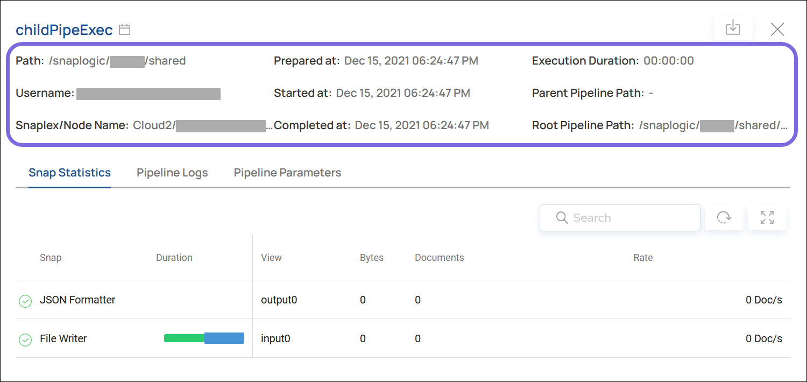
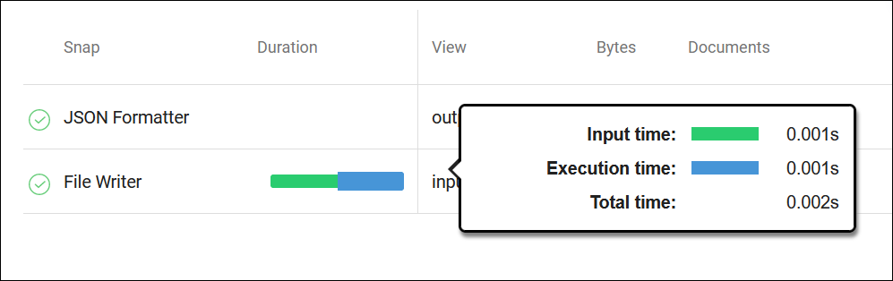
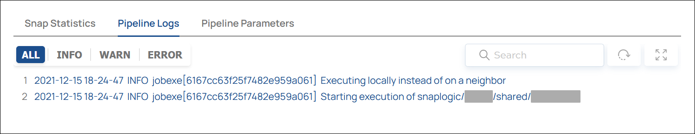

PREVIEW | Analyze: Execution Details
Details about a specific Execution.
When you click a row in the Execution Overview, you can view the details of that Execution, including information about the Snaps and Pipelines within the Execution.
Execution Metadata
The Execution details panel includes the metadata about the Execution.

| Field | Description |
|---|---|
| Path | The location of the Pipeline. |
| Username | The user account associated with the Execution. |
| Snaplex/Node Name | The Snaplex where the Execution happened. |
| Prepared at | The date and time when the Execution was configured. |
| Started at | The date and time when the Execution started running. |
| Completed at | The date and time when the Execution completed. |
| Execution Duration | The length of time the Execution ran; the difference between Started at and Completed at. |
| Parent Pipeline Path | The path to the parent Pipeline that triggered a child Pipeline included in this Execution. |
| Root Pipeline Path | The path to the highest-level ancestor Pipeline that triggered a child Pipeline included in this Execution. If the parent Pipeline has no parent of its own, it is also the root Pipeline. |
Snap Statistics
The Snap Statistics tab shows information about each Snap included in the Execution.

| Field | Description |
|---|---|
| Snap | The name of the Snap included in the Execution. |
| Duration | A colored bar that indicates the lengths of time that the Snap took to complete each process, relative to the total time.
Tip: Hover over the bars to show a legend with the exact lengths of time.
 |
| View | The name of an input or output port of the Snap. The data in the Bytes, Documents, and Rate columns are associated with the indicated View. |
| Bytes | The number of bytes that passed through the indicated View. |
| Documents | The number of documents that passed through the indicated View. |
| Rate | The throughput of the indicated View (number of documents that passed through per second). |
Pipeline Logs
The Pipeline Logs tab shows the log entries that were generated during the Execution.

| Filter | Description |
|---|---|
| All | All log entries associated with the Execution. |
| Info | Only informational messages. |
| Warn | Only warning messages during the Execution. |
| Error | Only error messages that occurred during the Execution. |
Pipeline Parameters
If the Pipelines in the Execution required parameters, the Pipeline Parameters tab shows information about the parameters passed to the Pipeline.

Learn more: Pipeline Properties